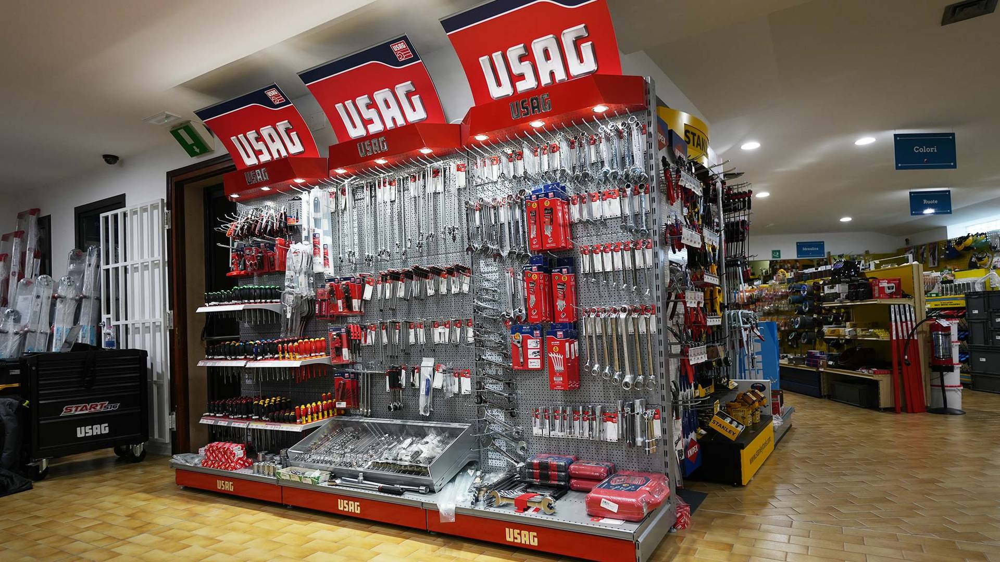
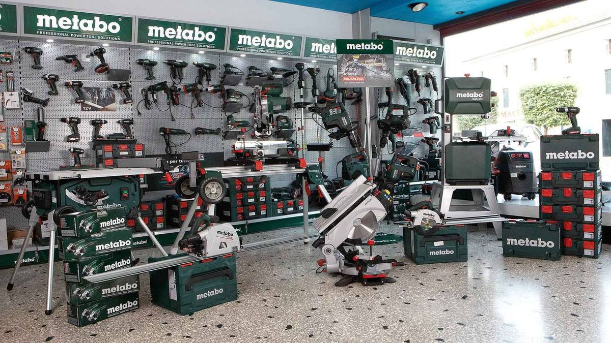
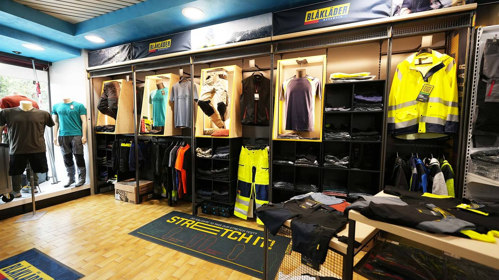
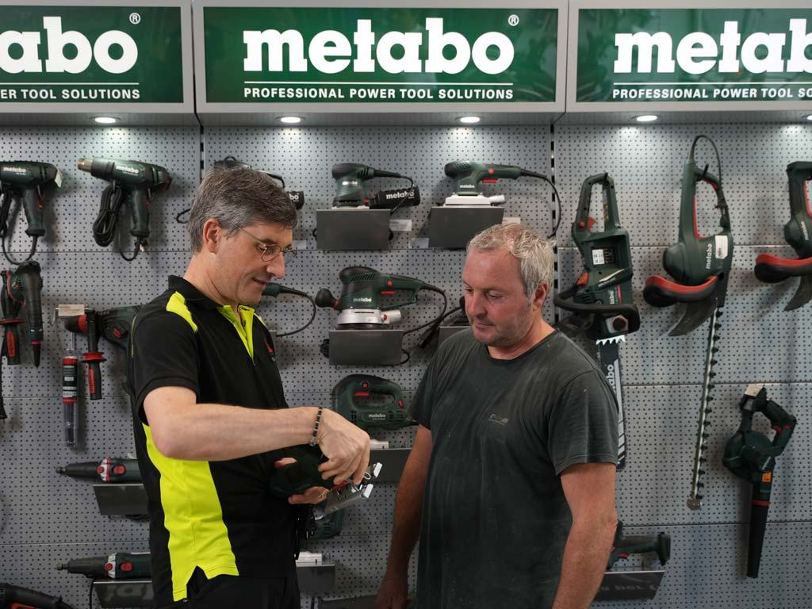
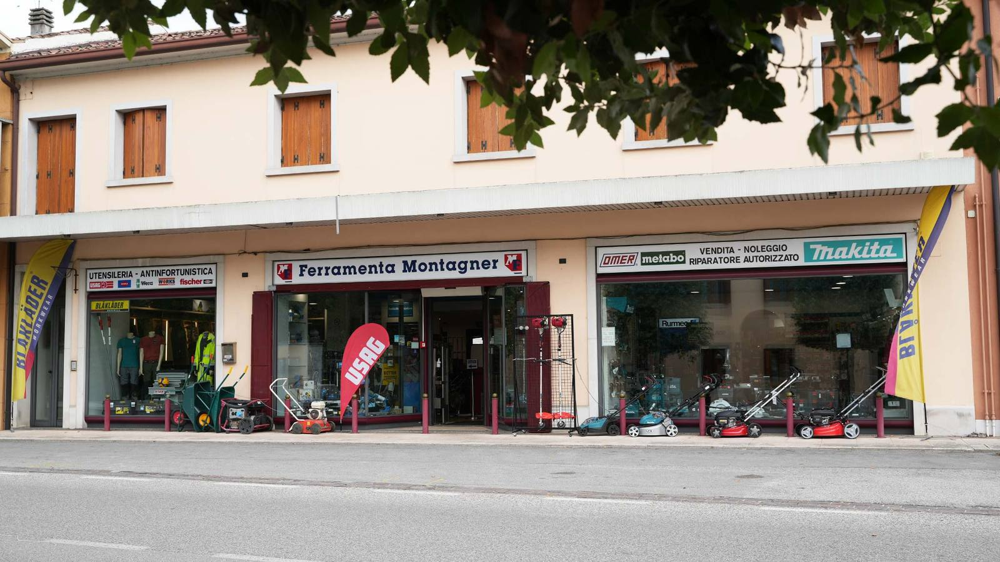
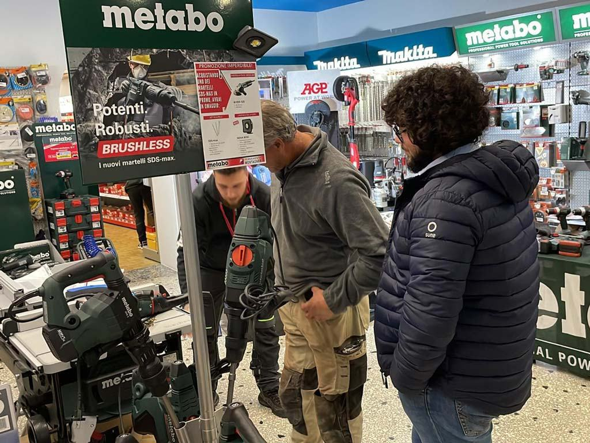

Dal 1974 la ferramenta di chi lavora.
Elettroutensili, fissaggi, antinfortunistica e utensileria dei marchi professionali. E un'officina in negozio che ripara Makita, Metabo, Omer e Rurmec. In Via Roma 44 a Cordignano (TV).
1974anno di apertura
26marchi in negozio
4assistenze autorizzate
1officina interna
Cosa trovi in negozio
Sei reparti per chi costruisce, monta e ripara. Le marche sono quelle che si usano in cantiere e in laboratorio. Non trovi il pezzo a scaffale? Chiedilo al banco.

-
Elettroutensili
Trapani, tassellatori, martelli demolitori, smerigliatrici, seghe circolari e da banco, levigatrici, fresatrici, pialle e saldatrici.
Vedi nel catalogo online -
Utensili a batteria
Trapani avvitatori, avvitatori a massa battente, troncatrici, aspiratori e attrezzi da giardino a batteria. Kit e batterie Makita e Metabo.
Vedi nel catalogo online -
Sistemi di fissaggio
Ancoranti metallici e chimici, fissaggi per calcestruzzo anche in zona sismica, per cappotti, cartongesso, serramenti e ponteggi. Viteria e bulloneria.
Vedi nel catalogo online

-
Antinfortunistica e abbigliamento
Scarpe antinfortunistiche, protezione delle vie respiratorie, abbigliamento professionale e ad alta visibilità.
Vedi nel catalogo online -
Utensili ad aria e punti metallici
Chiodatrici, graffatrici e compressori, con graffe, groppini e spilli Omer in confezione e in imballo.
Vedi nel catalogo online -
Utensili manuali e portautensili
Chiavi, bussole, dinamometriche, giraviti, pinze e martelli. Carrelli, cassette e borse Usag e Stanley.
Vedi nel catalogo online
In negozio anche siliconi, schiume e ancoranti chimici, luci e fari da cantiere, materiale elettrico civile e industriale, idraulica, miscelatori per malta e vibratori per cemento.

L'utensile si è fermato? Portalo al banco.
Dal 2005 in negozio c'è un tecnico a tempo pieno: fa manutenzione e riparazioni su utensili di tutti i marchi, anche al momento.
- Makita riparatore autorizzato
- Metabo riparatore autorizzato
- Omer riparatore autorizzato
- Rurmec-AGP centro assistenza autorizzato da maggio 2023
Vendita e noleggio: chiedi al banco quali attrezzature puoi noleggiare. [DA CONFERMARE: elenco attrezzature a noleggio]
Chiama per un'assistenza“Negozio super fornito, personale gentilissimo, super-esperti di Makita, mi hanno sistemato un vecchissimo elettroutensile in pochissimo tempo facendomi risparmiare un bel po'.”
26 marchi, quelli che si usano in cantiere
Siamo rivenditori ufficiali. Con la chiave inglese sono segnati i marchi che ripariamo come centro autorizzato.
- Bessey
- Blåkläder
- BLS
- Comet
- DeWalt
- Diadora Utility
- Diakom
- Fanton
- Fervi
- Fischer
- Gentilin
- Knipex
- Kratos Safety
- Lotto
- Makita
- Metabo
- Metrica
- More
- Omer
- Pezzol
- Rurmec AGP
- Scangrip
- Stanley
- Tecfi
- Usag
- Wera
Due generazioni dietro lo stesso banco
La gestione è ancora oggi della famiglia Montagner. Negli anni il negozio ha lasciato regali e casalinghi per diventare quello che è: ferramenta, utensileria, viteria e antinfortunistica per chi lavora.

- 1974
Pasquale Montagner e il fratello Piero aprono a Tamai (PN) il primo negozio: ferramenta, casalinghi e articoli da regalo.
- 1981
A novembre apre il negozio di Cordignano.
- 1985
Pasquale si trasferisce a Cordignano e si dedica solo a questo negozio.
- 1986
Primo ampliamento dei locali di vendita.
- 1992
Secondo ampliamento: negozio, magazzino ed esposizione rifatti per le nuove richieste.
- 1996
Entra in società il figlio Morgan e il negozio si specializza in ferramenta, utensileria, viteria e antinfortunistica.
- 1998
Via gli articoli da regalo, poi i casalinghi: spazio solo agli attrezzi da lavoro.
- 2005
Arriva in negozio un tecnico specializzato a tempo pieno, per le riparazioni.
- 2023
A maggio diventiamo centro assistenza autorizzato Rurmec-AGP. A novembre l'Open Day in negozio con gli stand dei marchi.
- 2024
Cinquant'anni dal primo negozio.
Cosa dicono i clienti

“Sempre gentili e ben forniti, anche se non hanno il prodotto sanno come fartelo avere in breve tempo. I loro consigli sono sempre azzeccati.”
“Ferramenta molto fornita, serietà e competenza da parte del ragazzo del negozio che telefonicamente mi ha spiegato per l'acquisto di lame per una sega a nastro. Venerdì ho fatto l'ordine e oggi martedì è arrivato il pacco.”
“Ottima ferramenta, vasta scelta di articoli e personale preparato e gentile. Ricominciamo a rivolgerci ai negozi del paese dove la cortesia ci fa sempre sentire come a casa.”
“Ottima ferramenta con cui collaboro per lavoro. Bell'esperienza sia durante la vendita sia per assistenza sui propri prodotti. Consigliato.”
Estratti da recensioni pubbliche lasciate online dai clienti.
Non riesci a passare? Ordina online.
Il catalogo è online, con prezzi dedicati agli acquisti dal sito. Spediamo con UPS e numero di tracciamento, di solito entro 2 giorni dal pagamento.
Apri il catalogo onlineTi aspettiamo in Via Roma 44
Via Roma 44, 31016 Cordignano (TV) 0438 995451 info@ferramentamontagner.itOrari [DA CONFERMARE]
- Lunedì – venerdì
- 8:00 – 12:15
14:30 – 18:45 - Sabato
- 8:00 – 12:15
- Domenica
- Chiuso